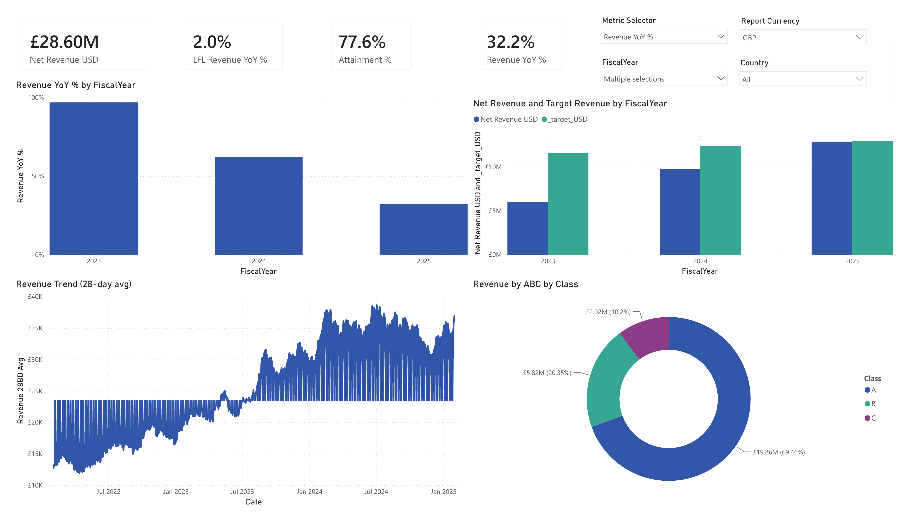

Financial Overview
A Power BI financial report built as an assignment at Lenador Systems, covering revenue performance against target, year-over-year growth, and where revenue is concentrated.
What the report shows
The report gives a summary view of financial performance on a single page. It covers how revenue is tracking against target, how it has grown year over year on both a headline and like-for-like basis, how revenue is distributed across product classes, and how the daily revenue trend has moved over time. Filters for currency, fiscal year, and country let the same page be read from different angles.
The report

What's on it
- A metric selector that switches the KPI card and trend line between Revenue YoY %, LFL Revenue YoY %, Net Revenue, and Attainment %
- A 28-day rolling average trend, which smooths daily variation while keeping the overall shape of the series visible
- ABC classification of revenue by class, showing how much of total revenue each class accounts for
- Net Revenue against Target by fiscal year, shown next to Revenue YoY % by fiscal year so growth and attainment can be read together
The metric-selector technique
A disconnected table lists the available metrics, and a slicer against that table feeds one measure that switches its calculation using SWITCH. This means one visual and one measure instead of a separate chart per metric. I used the same approach again in the GulfCart project.
Like-for-like vs headline growth
Headline year-over-year growth includes revenue from stores or channels that opened during the period. Like-for-like growth excludes those, so it reflects growth from the existing base only. The two figures differ significantly in this dataset, so the report shows both rather than the headline number alone.
What I'd extend next
- Add a drill-through from the ABC classification into product or SKU level detail
- Show how the like-for-like calculation is defined as a note on the page, not only in the measure
- Add a country or region breakdown alongside the existing currency and fiscal year filters